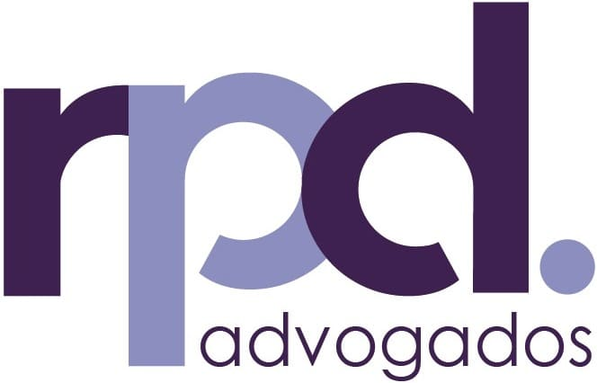

Foi diagnosticado com uma doença grave? Você tem o direito de parar de pagar Imposto de Renda.
Aposentados, pensionistas e militares com doenças como Câncer, Cardiopatia, Parkinson, entre outras, têm direito à isenção total de IR. Pare de deixar seu dinheiro com o Leão no momento em que você mais precisa focar na sua saúde.
- Análise rápida para identificar se seu laudo médico dá direito à isenção.
- Recuperação do dinheiro pago indevidamente nos últimos 5 anos.